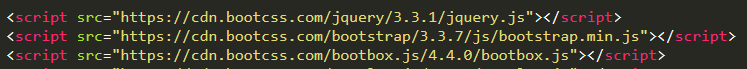

【js-task04】如何使用Bootbox？
小课堂
分享人：张峻
目录
1.背景介绍
2.知识剖析
3.常见问题
4.解决方案
5.编码实战
6.扩展思考
7.参考文献
8.更多讨论
1.背景介绍
在JS任务6-10做萝卜多后台中我们会使用到模态框，当时我在做这个任务的时候是使用了AngularJS的ui-bootstrap中的模态框，但是使用起来真的真的很繁琐！直到后来接触到bootbox，发现原来写模态框可以如此的简单。
Bootbox.js是一个小型的JavaScript库，基于 Twitter 的 Bootstrap 开发。它允许你创建使用编程对话框。可以快速定制，创建自己所需的模态框，可以方便的更改它的样式。
Bootbox不像原生的alert等对话框，所有的Bootstrap模态框生成的都是非阻塞事件。所以 在使用confirm()对话框时，请记住这一点，因为它不是本地确认对话框的替代。 任何取决于用户选择的代码都必须放在回调函数中。
2.知识剖析
该库提供了模拟原生JavaScript的alert警告，confirm确认、prompt提示这三个对话框，另外Bootbox还有dialog自定义对话框。它们每个可以采取各种参数来定制标签和指定默认值，它们最基本用法如下：
alert：
alert是只有单个按钮的对话框，按ESC键或单击关闭按钮可关闭对话框。
bootbox.alert("Your message here…", function(){ /* your callback code */ })
confirm：
Confirm是具有确定和取消按钮的对话框， 按ESC键或单击关闭将忽略对话框并调用回调函数，效果等同于单击取消按钮。
需要注意的是，使用confirm时回调函数是必须的。
bootbox.confirm("Are you sure?", function(result){ /* your callback code */ })
prompt：
prompt是提示用户进行输入操作并确定或者取消的对话框， 按ESC键或单击关闭将忽略对话框并调用回调函数，效果等同于单击取消按钮。 同样，prompt中回调函数也是必须的。
注意：prompt在使用options选项时需要title选项，并且不允许使用message选项。
bootbox.prompt("What is your name?", function(result){ /* your callback code */ })
dialog：
一个完全自定义的对话框方法，它只接收一个参数 options 对象。也就是说按ESC键时，这个自定义对话框将不会自动关闭，需要使用onEscape函数手动实现此行为。
bootbox.dialog(options)
options至少要有message选项。
3.常见问题
使用Bootbox需要注意的地方有哪些？
4.解决方案
首先Bootbox引入的版本要正确，bootbox的所有版本都是在Bootstrap和jQuery的基础之上的，因此bootstrap，jQuery和Bootbox的版本要对应

还有需要注意脚本引用的顺序
- jQuery
- Bootstrap
- Bootbox

5.编码实战
demo6.扩展思考
模态框和非模态框有什么区别？
模态对话框：就是在其没有被关闭之前，用户不能与同一个应用程序的其他窗口进行交互，直到该对话框关闭。
非模态对话框：当被打开时，用户既可选择和该对话框进行交互，也可以选择同应用程序的其他窗口交互。
7.参考文献
参考一：Bootbox.js
8.更多讨论
鸣谢
感谢大家观看
BY : 黄源志 | 张峻